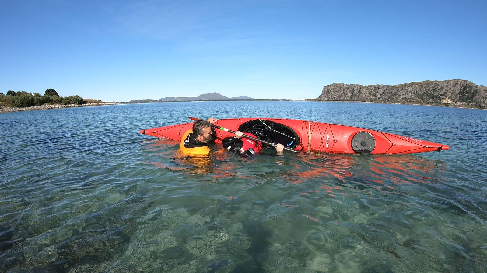

Pakketips for kajakk
Praktiske tips for å pakke kajakken smart, og en komplett interaktiv pakkliste for helgeturen.

Slik pakker du kajakken
En havkajakk har begrenset plass. Pakk smart med flere små pakksekker og riktig vektfordeling — det gjør turen tryggere og mer komfortabel.
- Skott foran
Lett utstyr: klær, sovepose, elektronikk.
- Cockpit
Kart, VHF, snacks. Under dekk / i vest: mat til lunsj, vannflaske, førstehjelp og solkrem.
- Dagluke
Lett tilgjengelig: mat, vann og førstehjelp.
- Skott bak
Tungt utstyr: telt, sko og store ting. Tyngst nærmest cockpiten og lengst ned for lavt tyngdepunkt og god stabilitet. Kajakken er designet for å gå opp i vinden — hold tyngden bak.
Pakksekker og dekk
- Pakksekker og tørrsekker
Alt som ikke tåler vann pakkes i vanntette pakksekker (dry bags). Lukene kan lekke — stol aldri på at kajakken er tørr inni! Beste størrelse for kajakk: 5–20 liter. Flere små sekker er lettere å pakke enn én stor. Velg kvalitetssekker — de tynneste holder ikke.
- Dekk — hold det rent!
Hold dekket så rent som mulig. Ting på dekket fanger vind og gjør kajakken tung å padle. Kun sikkerhetsutstyr hører hjemme på dekk. Fest med strikker og karabiner. Ting på bakdekket kan gjøre selvredning vanskelig!
5 gylne pakketips
- Alt som ikke tåler vann pakkes i vanntette pakksekker
- Det er lettere å utnytte plassen med flere små sekker
- Tungt utstyr pakkes lengst ned og nærmest cockpiten
- Ha så rent dekk som mulig for å fange lite vind
- Prøvepakk før turstart så du er sikker på å få med alt!
Pakkliste — helgetur i kajakk
Kryss av etter hvert som du pakker. Listen lagres automatisk i nettleseren din.
Kajakk og utstyr på dekk
Til å ha på seg
Reserveklær
Leir
Nødvendig utstyr
All bekledning og utstyr må vurderes nøye ut fra årstid, vanntemperatur og forhold en skal padle i!
Trenger du utstyr?
Kajakkguiden leier ut havkajakker og våtdrakter. Ta kontakt for å reservere.